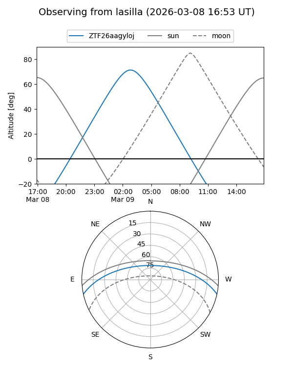
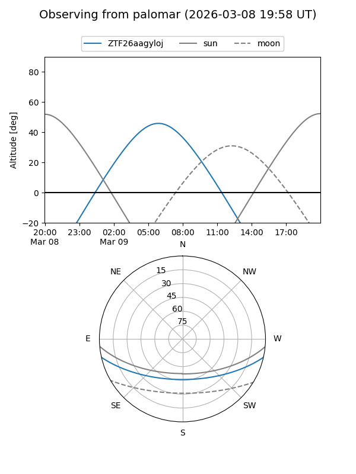

ZTF26aagyloj
Target ZTF26aagyloj at 2026-03-09 07:44
Aliases and brokers:
FINK: link
Lasair: link
ALeRCE: link
alt names
ZTF26aagyloj (ztf,fink_ztf)
Coordinates:
equatorial (ra, dec) = 137.9565,-10.61230
equatorial (HMS+DMS) = 09:11:49.55,-10:36:44.28
galactic (l, b) = (240.5975,+24.77035)
Flags:
Photometry:
last ztfg=18.41
1 ztfg detections
Lightcurve
Visibility


Additional plots